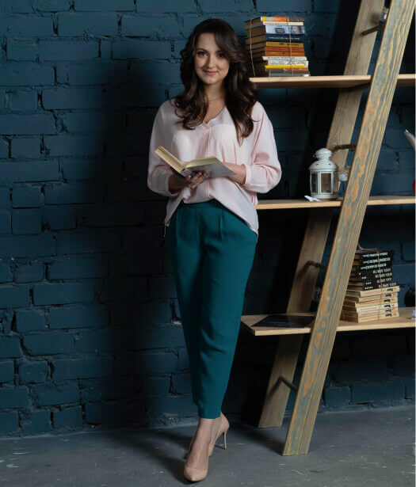
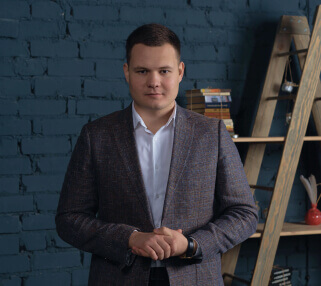
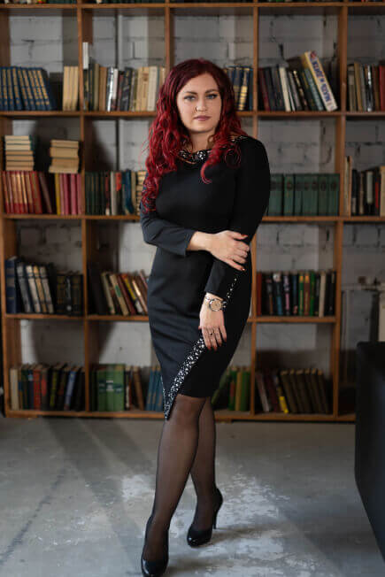

<section class="team" id="team-section">

    <div class="team__wrap container">
        <h2 class="team__title">
            Наша команда всегда <br>
            готова Вам помочь
        </h2>
        <div class="team__carousel team-carousel">
            <div class="team-carousel__item">
                
                <div class="tabs-team__inner">
                    <p class="tabs-team__title">
                        Новикова София
                        <span class="tabs-team__title">Ведущий специалист</span>
                    </p>
                    <p class="tabs-team__text">
                        Сегодня наша основная задача-получить успешный результат в
                        установленные сроки. Для
                        достижения этой цели необходимо, чтобы механизм работал как часы:
                        отделы
                        взаимодействовали между собой, а работы по всем 11 этапам проходили
                        качественно и
                        своевременно. Мы внедрили контроль качества, а также каждый день
                        отслеживаем статусы
                        рукописей. Кроме того, постоянно улучшаем сервис и информируем
                        каждого Автора,
                        помогая понять и отследить весь процесс. Мы уверены, что только в
                        тесной
                        коллаборации с нашими Учёными сможем достичь успеха и выйти на
                        достойный
                        международный уровень.
                    </p>
                </div>
            </div>
            <div class="team-carousel__item">
                
                <div class="tabs-team__inner">
                    <p class="tabs-team__title">
                        Кадыров Марсель<br>
                        <span class="tabs-team__title">Сооснователь компании</span>
                    </p>
                    <p class="tabs-team__text">
                        Понимая всю ответственность, смело могу заявить, что
                        выбранный
                        путь развития компании единственно верный вариант. Мы
                        хотим
                        развивать отечественную науку открыто и по честным
                        правилам.
                        Для
                        этого мы привлекли зарубежного партнера из Нидерланд
                        (родины
                        Эльзевир), компанию “Peerwith”, имеющую большой опыт
                        работы
                        в
                        данной сфере.
                    </p>
                    <p class="tabs-team__text">
                        Вместе мы разработали абсолютно новый рабочий механизм
                        публикаций в международных журналах, входящих в базы
                        данных
                        Scopus и Web Of Science.
                    </p>
                </div>
            </div>
            <div class="team-carousel__item">
                
                <div class="tabs-team__inner">
                    <p class="tabs-team__title">
                        Самойлова Юлия
                        <span class="tabs-team__title">Ведущий специалист</span>
                    </p>
                    <p class="tabs-team__text">
                        Публикация научных статей - это очень ответственный шаг в жизни каждого ученого.
                        Последние 10 лет публикации активно проходили в журналах-хищниках, в журналах,
                        которые за денежное вознаграждение публикуют быстро, не обращая внимания на научную
                        составляющую, пропуская этап научного рецензирования. Пришло время поменять
                        парадигму! Необходимо доказать всему мировому сообществу, что статьи ученых России и
                        стран СНГ достойны быть представленными на международной арене, достойны быть
                        опубликованными в лучших журналах Scopus и Web of Science. Голоса наших ученых
                        должны быть услышаны, и мы пройдем этот пусть все вместе!
                    </p>
                </div>
            </div>
        </div>
    </div>

</section>